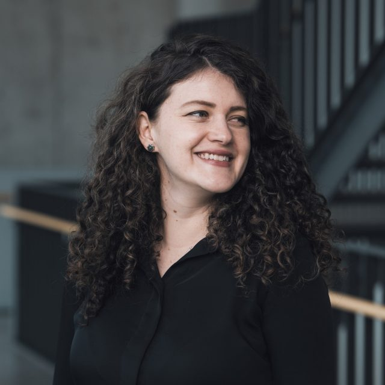

Senior circular economy and climate change consultant and researcher bridging environmental health sciences, economics, and social justice to build inclusive circular economies in Latin America and beyond.

Originally from Ambato, Ecuador, I am a circular economy consultant and researcher working at the intersection of environmental health sciences, climate change, and social innovation. My career spans international development consulting, academic research, and biotech entrepreneurship — all guided by the conviction that sustainability must be inclusive to be real.
My PhD at KU Leuven (Belgium) explored the social determinants of the circular economy, focusing on how informal recyclers and waste pickers — particularly women — can be included in circular economy models across Latin America.
Today I consult for GIZ and the Inter-American Development Bank on circular economy strategy, bioeconomy in the Amazon, and climate adaptation. I have also consulted for several multilateral organizations and NGOs including WIEGO, UNIDO, FAO, and WWF. I lecture at Universidad San Francisco de Quito, serve as a thesis supervisor at the University of Cambridge CISL since 2024, and am a co-founding member of the Zero Waste Alliance in Ecuador since 2019. Beyond consulting and research, I am a storyteller — selected by The Moth for a bilingual storytelling course — and a published poet. I also served as a Project Drawdown research fellow, estimating the impact of scaling existing climate solutions.
Earlier in my career, I co-founded CarboCycle at Columbia University, developing technology to produce palm oil substitutes from organic waste via precision fermentation. The venture was later acquired by Insempra.bio, where the technology continues to scale sustainable ingredients for the cosmetics and food industries. This work earned me recognition as one of MIT Technology Review's Innovators Under 35.
I am closing loops for the future of my kids, Navi and Nina.
Leading circular economy strategy across Latin America. Co-authored Ecuador's Circular Economy White Book.
Advising on bioeconomy ventures in the Amazon at the intersection of climate adaptation, biodiversity financing, and sustainable development for indigenous communities.
Consulting on circular economy, informal sector inclusion, sustainable development, and climate policy for various multilateral organizations and international NGOs. Thesis supervisor at the University of Cambridge Institute for Sustainability Leadership (CISL) since 2024.
Co-founded Ecuador's zero waste alliance, advocating for waste reduction, circular economy policy, and community-based waste management solutions.
Led sustainability strategy as CarboCycle scaled its precision fermentation technology. The company was subsequently acquired by Insempra.bio.
Virtual fellowship exploring art-science innovation aligned with the UN Sustainable Development Goals. Developed the Mycorrhiza Project — blending biomimicry, circular economy, and storytelling with waste picker communities across the Global South.
Interdisciplinary doctoral research on social contributions of the circular economy, gender and CE, and informal recycling in Latin America.
Teaching sustainability, environmental sciences, and circular economy (2017–present). Previously served as Sustainability Officer (2015–2018), leading institutional sustainability assessments and carbon footprint studies.
Co-developed precision fermentation technology to produce palm oil substitutes from organic waste. The venture was later acquired by Insempra.bio.
National strategy guiding Ecuador's circular economy transition: policy frameworks, sustainable production, responsible consumption, and integrated solid waste management.
View publication →Qualitative research with female waste picker leaders in Ecuador and Colombia on social safety nets and gender justice in circular economy transitions.
View research →Scouting and designing projects with bioeconomy ventures supporting indigenous communities with sustainable business plans that deliver climate benefits.
Learn more →Research fellowship modeling the impact of scaling climate solutions — contributing to the most comprehensive plan to reverse global warming.
Visit Drawdown →Co-founded at Columbia University, CarboCycle developed precision fermentation technology to produce sustainable microbial lipids from organic waste. The venture was acquired by Insempra.bio, where the technology continues to scale.
Visit Insempra.bio →Selected by ASU's Center for Science and the Imagination to explore art-science innovation for sustainability. Developed the Mycorrhiza Project blending biomimicry, circular economy, and storytelling with waste picker communities.
View fellowship →In-depth feature on CarboCycle's technology and the environmental case against industrial palm oil.
Read →Selected for bilingual storytelling at Columbia. Journey from public health to circular economy.
The Moth →Named among MIT Technology Review's Innovators Under 35 Ecuador (2016) for early work on CarboCycle's precision fermentation technology.
View →Published poet. The Mycorrhiza Project explores relational networks in circular care.
I offer consulting in circular economy strategy, policy development, bioeconomy, climate change adaptation, gender and social inclusion, waste management, water governance, startup mentoring, keynote speaking, and research partnerships. I work with international organizations (GIZ, IDB, WIEGO, UNIDO, FAO, WWF), governments, startups, and academic institutions across Latin America and the Global South.
I work primarily in Ecuador, but my experience spans all of Latin America and the Caribbean through projects with GIZ, IDB, and other multilateral organizations. I have also worked in Ghana, Belgium, Germany, and the United States.
You can reach me via email or LinkedIn to discuss consulting, keynote speaking, workshops, research collaborations, or advisory roles. I work in English and Spanish with international organizations, governments, and academic institutions.
I work with international organizations, governments, startups, and academic institutions to design circular economy solutions centering social justice and community resilience across Latin America and the Global South.
Get in touch